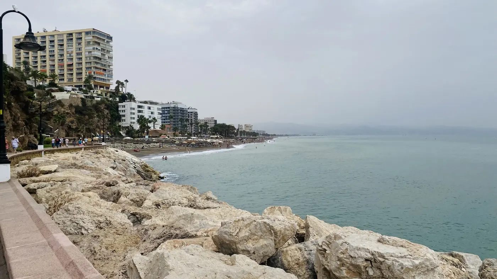

Palmeras y marFotografía facilitada para la guía
TORREMOLINOS / LOCAL LENS
Gallery
Una ciudad que merece mirarse despacio
Fotografías originales del archivo y creaciones editoriales claramente identificadas

A la mesaFotografía facilitada para la guía
Flores junto al marFotografía facilitada para la guía
Llegar a TorremolinosFotografía facilitada para la guía
La plaza al solFotografía facilitada para la guía
El sabor del marFotografía facilitada para la guía
Una mesa compartidaFotografía facilitada para la guía
No hay imágenes disponibles en esta categoría
Un canal privado para nuevas fotografías estará disponible tras confirmar autorizaciones
Transparencia IA